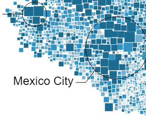
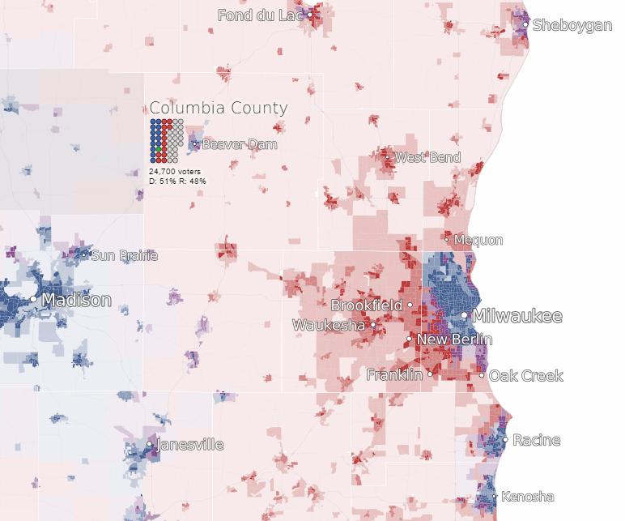
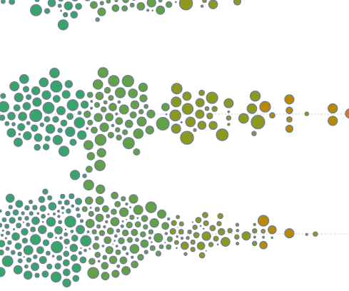
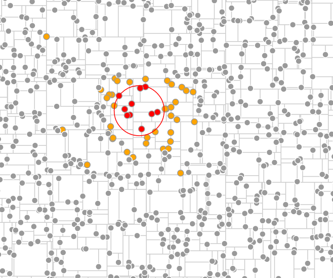
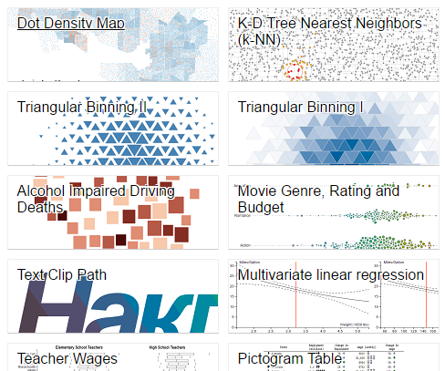

I'm an economist at the Bureau of Labor Statistics in Washington, D.C. where I help make the numbers behind the Occupational Outlook Handbook. Before moving to Washington to create statistics, I lived in Madison, Wisconsin where I studied economics and Russian at the University of Wisconsin.
|  |
Scattered Well-BeingExplore the complexity of well-being across Mexico. Winner of the OECD's Visualizing Well-Being data visualization contest (2015) . |
|  |
Voters of WisconsinA detailed map of the 2014 election for governor of Wisconsin. Lets you see where eligible voters are, who they voted for (if they voted at all). |
|  |
d3.forceChartA D3.js plugin that simplifies making charts and cartograms that have non-overlapping, force-directed elements. |
d3.triangleBinA D3.js plugin for binning points into triangles. Useful for visualizing the density of many data points across two dimensions. |
|
|  |
KDTreeA JavaScript tool for making k-d trees . Useful for things like efficiently finding a point's nearest neighbors. |
|  |
My BlocksAssorted data visualizations, maps and code examples hosted on bl.ocks.org. The examples range from prototypes to complete pieces. |